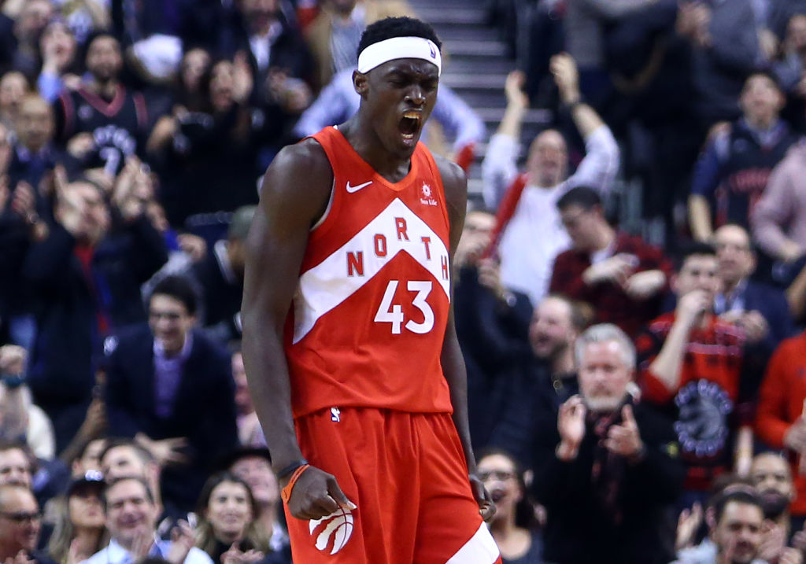
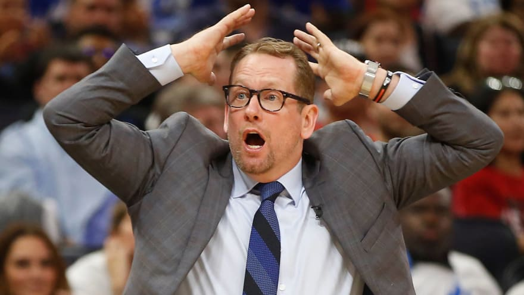

2013. A year that changes the franchise forever. Two crucial members of the team join its ranks. The first being world-renowned rapper Drake, who becomes the team’s global ambassador in a marketing effort. Now seen as one of the biggest fans, constantly getting into controversies for getting a little too into the game. He is one of Toronto’s most influential fans and has helped Toronto substantially throughout his participation in the team.That same year an even more important member of the team is hired. Masai Ujiri. The president of the Toronto Raptors. He has influenced the team tremendously. Making crucial decisions that have led to our success.
That same season. 2013-2014 the Raptors end their six year playoff drought and make it to the first round once again. That season the Raptors ended in the third seed, and from then onwards they have always had home court advantage. This means that they always concluded the regular season in the top four positions of the conference.  The team was once again eliminated in the first round in 2015. The year after that new heights are reached. After coming out of the first ever all-star game in Toronto, and the first out of the United States. The Raptors ended in the second seed. Emerged victorious out of the first round, conquered Miami in the second, and for the first time in 20 years reached the NBA conference finals. Unfortunately there they met Lebron. Possibly the best player to ever live. They were outmatched, and the King took his teams to the finals and went home with the trophy. But the Toronto proved what it could achieve, and it was more than anybody expected.
That year the Raptors drafted two players that would go on to be crucial to our success. Pascal Siakam, at the 27th pick, and Fred Vanvleet who went undrafted. Although they were not projected to be great players, they have had spectacular breakouts and are one of the most key players in our team right now.
The following years were good for the Raptors. Finishing third and first seeds, and advancing to the conference semifinals on both occasions. Only to be taken down by Lebron every single time. Finally we reach the summer of 2018. Masai Ujri makes the riskiest decision of his life. Shocking the whole basketball world, and drastically changing the balance of the National Basketball Association. The trade went as following: Demar Derozan, Jakob Poeltle and a protected first-round pick, were sent to the Spurs; and Kawhi Leonard and Danny Green, were brought to Toronto. Kawhi was an mvp calibre player, who had won defensive player of the year twice, and had already been named finals mvp once as well, but his injuries had seriously affected his career in the past, and it was not clear how well he would perform. Danny Green was a good overall player and an incredible shooter, but Demar had been an expensive price to pay for the pair. It all depended on Kawhi’s health.
Another change, debatably almost as important, was when Dwayne Casey, who won coach of the year, and had led Toronto to new heights left to Detroit, and was replaced by his second in command: Nick Nurse.
The season started off strong with a six game win-streak, and progressed positively. It looked like another good year for the Raptors. But Masai had his eyes on another piece. 3 time all-star, and defensive player of the year Marc Gasol. In another risky trade, Masai trades Jonas Valanciunas, Delon Wright, and CJ miles. February 8th Marc is officially part of the team. The season ends with us in the second seed.
The playoffs start of rough, loosing the first game to a weak Orlando team, at home. It seemed like Kawhi was the only player on the team. No one else wanted the ball. Things changed quick, and the next four games are victories eliminating Orlando from the competition. Next comes Philadelphia. A strong team, with many young talents. It is an excruciatingly close series. But due to sheer determination we arrive at a game seven at home. The game is painfully close. At 4.2 seconds left on the clock, both teams are tied. Then this happens:
It is the first ever game seven buzzer-beater. One of the greatest shots of all time. The whole country explodes, and the shot will forever go down in history. But the playoffs are far from over. We are faced against the number one team in the regular season, led by the future mvp Giannis Antetokoumpo. Toronto has a whole country behind them, and we overpower the “Greek Freak” in six games. The last one a spectacular performance by the one and only Freddy Vanvleet. Right after the birth of his child. For the first time in the history of the franchise, we arrived at the NBA finals. The whole team played their best, led by Kawhi, and with help of a pair of unfortunate injuries for the opposing Warriors team, we emerge as victors. In just six games, the Raptors stop the Golden State’s three-peat and take home the trophy. For the first time in history it is won by a team outside of the United States.
We have arrived at the present, but the Raptor story is far from over and the future is still to come. If you want more information on our roster for the next season click here. This is the team that is leading us into to whatever is to come.